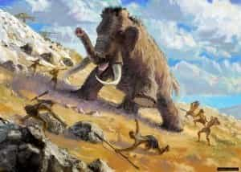
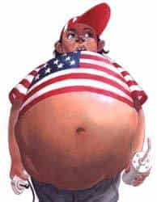
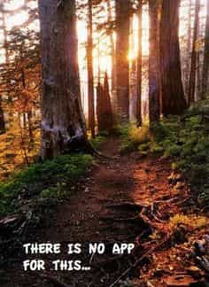
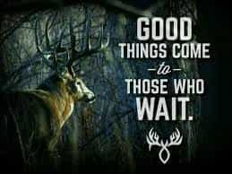

< < < Back
5 Reasons Why Every Man Should Go Hunting Once In Their Lifetime – Return Of Kings
I have been hunting since my early teens and have been lucky enough to have great mentors along in the process. I have learned quite a few things about the skills involved, but what has taught me even more about myself and the human species is the philosophy behind hunting.
This article is not advocating buying a rifle and going to shoot the first brown furry animal you see, but rather to give perspective into an activity that has defined masculinity for the first two million years of the Homo genus, up until the agricultural revolution. The name of the game was kill the beast and eat, or fail and go hungry. This is why for most of human evolution, masculinity was defined by the ability to hunt.
History of our species
This is how masculinity was defined for most of our evolution. Take down the beast or starve.
The Homo genus began to greatly diverge from the rest of the primates roughly 2 million years ago. It did so because our ancestors had access to high quality food (calorie dense) such as animal meat, which contained loads of protein and most importantly, fat.
Research has shown that primates follow a certain trend when it comes to body weight and diet. The smaller primates, such as pigmy monkeys, have a high quality diet that is dense in calories, mainly consisting of insects, seeds, and fruit. The larger primates, like the gorilla (the largest of all primates), have a low diet quality and are mainly volume feeders of green leafy plants.
Humans (I am referring to Paleolithic humans) are an outlier in this trend; we are relatively large primates but have a very high diet quality consisting of animal meat, fruits, seeds, and vegetables. This is why we evolved the brain that we did, because we had the bodily surface area to support a large brain as well as the calories from large animals to supplement it.
So what do you take from this? Hunting is in every man’s DNA. While the methods of modern hunting are much different and less strenuous than prehistoric hunting, (for roughly 1.5 million years humans practiced persistence hunting, meaning they literally ran an animal down over a span of 30-50 miles. Read the book Born to Run) it still provides modern men with an outlet to tap into their primal selves and release some of the inner beast that has been suppressed by modern society. Here are my five reasons why you should go hunting at least once in your lifetime:
1. Reconnect with your food
Ask any fifth grader in the United States right now where their meat comes from and I would be willing to bet $100 that the majority of them would say the grocery store. As Americans, we have a deep disconnect with our food. We don’t understand that the pork chop on our dinner plate once was a living, breathing creature that someone had to kill, gut, and process.
Little Tommy thinks food comes from McDonald’s or the grocery store.
When you hunt and kill an animal you experience every part of how food gets from point A to point B. You must kill it, carry its body to clean it (if you can’t deadlift over 250 pounds, good luck), skin and gut it, and then process the carcass before you eat it.
While the thought of that image might turn some people off and some would definitely consider it cruel and unusual, they wouldn’t think twice about the hypocrisy of their thought process while biting into their organic, free-range chicken breast they bought from whole foods. I am a firm believer that if one wants to eat meat, they should have the experience, at least once, of killing that animal for themselves and making all the necessary preparations to put that animal on the dinner table.
2. Develop knowledge and skills
When one thinks of the skills involved in hunting, the first thing that comes to mind is the ability to shoot a high-powered rifle from 40 yards away and kill an animal. This could not be further from the truth. While being able to shoot accurately is an important aspect of hunting (many including myself prefer to bow hunt instead of rifle hunt), other more important skills are needed to be a successful hunter.
Understanding your prey is the most vital part of the hunt. How do they use their senses to interact with their environment? For example, deer can smell and hear extremely well, but their vision is limited. Turkey could pick a needle out of a haystack from 50 yards away but their smell and sight aren’t too great. Knowing these things about your prey causes you move and interact with your surroundings differently based on what you are after. You also get to know the animal you are hunting in an intimate way.
Aside from gaining knowledge about your prey and its environment, you have to be able to move through the woods silently (I promise, it is a lot harder than it sounds). You have to learn how to maintain all of your equipment. This includes taking apart and cleaning a gun, properly sharpening a knife, learning how to set up hunting stands.
You also must learn to process a kill, which experienced hunters will tell you is an art form. All of these are practical skills that most men have no knowledge of because activities such as hunting are now considered unnecessary and barbaric.
3. You can get away from everything
Spend some time away from everything electronic.
One of my favorite things about going hunting is leaving my iPhone in my car, walking into the woods, and getting away from normal life for a day. Most people in today’s world can’t remember the last time they went without their phone, computer, or TV for more than a couple of their waking hours.
When you don’t have an electronic device to constantly stimulate your mind, you will notice that you do a lot of thinking and self-reflection. When I am out in the woods, I usually give myself one self-analysis about what I want out of life, what my goals are, and how I will reach them. You don’t need to go hunting or be deep in the woods to do this, but for me, hunting is an outlet where I can let the modern world go on without me for a day.
4. You work on your patience

Hunting is a waiting game. 99.7% of the time you are sitting in a tree stand, perched up against the base of a tree, or walking slowly and quietly through the woods. But for all that time spent waiting; the rush of encountering your prey is all worth it.
Hunting teaches you to constantly be aware of your surroundings. If you become impatient and decide to move around or fidget with twigs, you might have just alerted an animal to your presence (I learned this the hard way when I was younger). You have to be mentally strong enough to be still and quite for hours at a time. For this reason, hunting also provides a great outlet to meditate and worry about nothing but the woods around you.
5. You learn more about yourself
When you take any living creature’s life, you learn more about yourself. When I killed my first deer I was excited, but when I saw the carcass the realization hit me that five minutes before, it was a living creature and now it is dead because of me. For this reason, I am a firm believer in not letting anything you hunt go to waste. If you don’t eat your kill, give it to hunters for the hungry or give to someone who will eat it.
People who kill animal just for the sake of killing them have no business calling themselves hunters. If our hunter-gather ancestors saw someone kill an animal, take a picture with it while high fiving their friends, and then leave it to rot they would think we are crazy. Because of hunting, I developed a strong conviction of not letting anything go to waste.
Conclusion
Even if you are 30 years old and have never hunted a day in your life, it is not too late to give it a try. It is so engrained in a man’s DNA that not trying it would almost be to ignore one’s true nature. Hunters are a friendly bunch and will often be more than happy to take someone under their wing who wants to learn or just try it once.
Hunting is not for everyone, and I get that, but I guarantee you will gain a whole new respect for where your meat comes from after you have gotten your hands a little bloody. And I promise your fresh, wild game will taste a helluvah lot better than a Tyson chicken breast.
Read More: 5 Reasons Why You Need To Grow A Beard


{kind=link}
{kind=link}
{kind=link}
{kind=link}